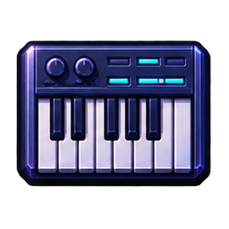
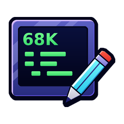
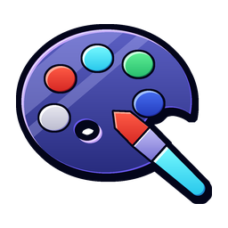

Defined object types stay easy to find; empty slots and capacity remain explicit. New and Duplicate are separate actions.
FIVE PLAYABLE STARTERS
Learn by changing something.
Top-down · Platform · Arcade · Puzzle · Two-player Replace the art, move a switch or change a rule. The examples use the same tools as your own project.
SEMAPAINT / EVERY PIXEL COUNTS
Small canvas. Precise control.
A 320 × 200 indexed canvas, layers beside your artwork and animation frames below it. Zoom in to see the individual ST pixels, with a pixel grid and a separate tile grid.
Original indexed artwork in SemaPaint 1.1.587. The animation cell size stays independent of the pixel grid.
COLOUR, WITHOUT SURPRISES
Add a colour. Keep what you painted.
New colour uses a free palette slot, or selects an exact match already in the palette. Edit colour deliberately changes every pixel using that slot. Both show a preview before you confirm.
Used slots include hidden layers and animation frames. If all sixteen slots are occupied, the editor tells you; it does not quietly recolour another part of your picture.
512 ST colours4,096 STE colours16 slots per picture
The ST and STE colour ranges are available through their hardware channel steps.
VISUAL RULES → SEMABASIC → 68000
Simple to begin. Space to go deep.
Add a few lines to an event, build shared modules or take control with a custom engine. SemaBASIC compiles to editable 68000 source; the machine’s memory and time remain the real limits.
The Code workspace in 1.1.587. Block indentation, automatic indentation, comment toggling, search and Undo support everyday editing.
Build on the game.
Attach SemaBASIC to Create, Step, Collision, keys, alarms or game events. Use procedures, arrays, strings, files, drawing commands and shared modules. Terrain queries work in room coordinates, including scrolling worlds.
Get closer to the machine.
Edit assembly routines or open generated source in Program Lab. Use the assembler and debugger to inspect your work. A custom engine is an explicit project choice, with its source used for builds.
Know the budget.
Up to 48 code units, 16 KB per unit and 128 KB of unit code in total. Maker checks the compiled program and target memory separately, including resources and supported packed loading.
THE REST OF YOUR STUDIO
A connected creative desktop.
Keep each task focused. Project links let you edit artwork and sound in their dedicated tools and bring changes back deliberately.

SemaSynth
Compose patterns and arrange songs. Shape YM instruments, edit waveforms and macros, work with digi and Quartet samples, or add supported STE stereo sample tracks.
MIDI workflows, sub-songs, groove, transpose, SNDH and audio export, plus supported YM/VTX and MOD workflows.
Sample Editor
Zoom into a waveform, select a range, trim, normalise and audition. Edit a MOD instrument and return it with its valid loop, or prepare a supported Maker sound effect.
Apply, Cancel and Undo make changes across tools explicit.

Program Lab
Write and assemble 68000 source, navigate code and inspect execution. Build errors link back to the relevant source, rule or routine.
Playtest supports breakpoints, stepping and named values, including SemaBASIC source-line debugging.

Capture Gallery
Compose a picture or a side-by-side comparison. Set the output shape, adjust the crop, add a caption and export PNG.
A large preview and focused inspector show what will be exported. Save an editable composition to revisit it later.
Capture Gallery in 1.1.587, using the same original demonstration artwork. Source pictures stay unchanged.
Also on the desktop: Disk Workshop for disk preparation, Explorer for files, Documents and Notes, Code Reader, and Help with searchable SemaBASIC and SemaSynth references.
REAL OUTPUT / REAL LIMITS
Build for the machine you choose.
Your project becomes a native ST program on a floppy image. Choose the target before adding features that depend on the STE or more memory.
520 ST / 512 KB
Native graphics, game rules, code and supported YM sound. Hardware Check enforces the selected RAM boundary during execution; it does not just watch a larger-memory run.
1040 ST & STE / 1 MB
Choose more RAM or STE hardware. STE palettes, DMA samples and supported four-channel MOD playback expand your options, while audio and game code still share the frame budget.
Running in SemaTor
Exports can include a matching enhancement profile for Smooth Motion and expanded views. These presentation features are supplied by SemaTor when it runs your game.
Actual generated demo disk, checked in emulation. The report distinguishes enforced memory, observed hardware use and estimated CPU activity.
An automatic check covers the paths it executes. Play a live test to exercise gameplay. These are emulator checks, not physical ST/STE certification; demanding effects and audio can exceed an original machine’s frame budget.
BEFORE YOU START
Practical details.
Do I need to write code?
No code is needed to begin with the editable starters and visual rules. Add SemaBASIC when you need more control, or work directly in assembly. The suite does not promise every game mechanic as a ready-made visual action.
How much artwork can a Maker project hold?
Up to 64 sprite assets and 128 tiles. Sprites can be up to 32 × 32 pixels with four animation frames. A room supports up to 48 placed objects and a project up to 64 visual rules. Resource and target-memory limits still apply.
Does an STE picture have 4,096 colours at once?
The standard indexed canvas has sixteen palette slots. On ST, each slot can use one of 512 colours; on STE, one of 4,096. Changing a used slot changes pixels that reference it. New colour is the safe way to add a different colour while a free slot remains.
Can I import my pictures and music?
Supported picture imports include Degas, NEOchrome, Spectrum 512, PNG, BMP, GIF and SemaPaint artwork, with target-palette conversion where needed. Music workflows include SemaSynth songs and supported MOD/SNDH imports. Conversions report features they cannot preserve.
Can rooms have their own music?
Choose the project song, silence or an imported 50 Hz SemaSynth SNDH up to 128 KB. Select which effects from the existing sixteen-effect / 128 KB PCM bank load with the room. Per-room audio currently cannot be combined with global MOD music.
What happens when the game gets bigger?
Maker supports packed programs, packed or disk-loaded room and scene resources, 360 KB or 720 KB disks and projects spanning up to nine disks. Build checks account for supported loading and unpacking as well as the running program.
Are the examples finished games?
They are editable starting points. The two-player starter now checks internal walls for both players. Test your own rules, artwork, controls and target before sharing a finished game.
Which build includes the tools?
The public Windows x64, Linux x86-64 and Linux ARM64 desktop builds include the suite inside SemaOS. Open the Create menu to begin. Android remains a separate private testing build; this page focuses on desktop authoring.
Make your first room.
Start with something playable. Keep making it yours.